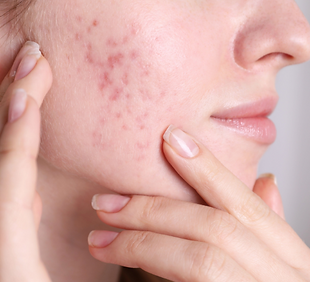
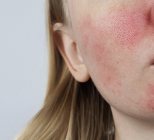
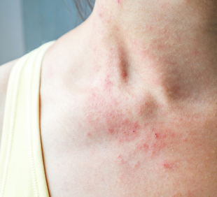
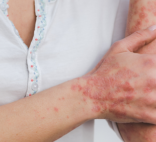
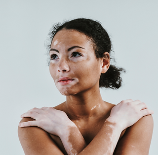
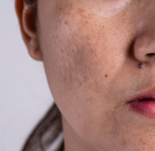
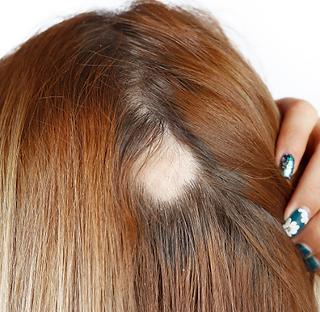
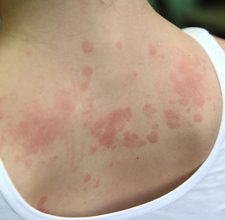

Acne
Frequentemente relacionada a desequilíbrios hormonais, inflamação e fatores dietéticos. A abordagem nutrológica e integrativa do Dr. Charles é fundamental para identificar e tratar as causas subjacentes, não apenas os sintomas.
Medicina integrativa • Dermatologia • Nutrologia
Uma abordagem personalizada que une ciência, cuidado humano e protocolos integrativos para transformar sua saúde e sua qualidade de vida.
Escuta ativa, diagnóstico cuidadoso e um plano pensado para você, com foco em resultados reais e duradouros.
Sobre o Dr. Charles
Como dermatologista (CREMERS 26.509 | RQE 17317) com pós-graduação em nutrologia (não especialista), o Dr. Charles enxerga além dos sintomas superficiais.
Sua metodologia integrativa investiga profundamente as raízes dos desequilíbrios que se manifestam na pele e no organismo, criando um plano de tratamento verdadeiramente personalizado.
Através de uma combinação criteriosa entre a medicina ocidental e os conhecimentos do Ayurveda, o Dr. Charles trabalha para identificar as verdadeiras causas dos sintomas, restaurar a harmonia entre mente e corpo, capacitar o paciente com conhecimentos para manter a saúde a longo prazo e desenvolver soluções personalizadas que respeitam a individualidade biológica.
Conheça mais
Dermatologia
A dermatologia é uma área essencial para cuidar da saúde da pele, do couro cabeludo e das unhas, com foco em diagnóstico preciso, prevenção e tratamento de longo prazo.
Atendimentos para acne, rosácea, melasma, dermatite, psoríase, sensibilidade cutânea, queda de cabelo, envelhecimento e cuidados estéticos com segurança.
Condições dermatológicas
Tratamentos personalizados para condições dermatológicas com foco em causa, inflamação, nutrição e bem-estar integral.

Frequentemente relacionada a desequilíbrios hormonais, inflamação e fatores dietéticos. A abordagem nutrológica e integrativa do Dr. Charles é fundamental para identificar e tratar as causas subjacentes, não apenas os sintomas.

Uma condição inflamatória crônica da pele que pode ser agravada por fatores dietéticos, estresse e desequilíbrios internos. O tratamento com Ayurveda e Nutrologia Funcional pode oferecer um alívio significativo e duradouro.

Muitas vezes associada a alergias, sensibilidades alimentares e disfunções da barreira cutânea, que podem ser influenciadas pela saúde intestinal e nutricional.

Uma doença autoimune crônica que tem forte ligação com o sistema imunológico, inflamação e, em muitos casos, com a saúde intestinal. A medicina integrativa e o Ayurveda podem ser valiosos para gerenciar a condição de forma holística.

A nutrição desempenha papel fundamental nesta abordagem. Deficiências específicas de micronutrientes são frequentemente identificadas em pacientes com vitiligo e sua correção pode estabilizar a progressão da doença. Implementamos dietas anti-inflamatórias personalizadas que reduzem a ativação imunológica excessiva e o estresse oxidativo.

Manchas escuras na pele que podem ser influenciadas por hormônios, exposição solar e, segundo a perspectiva ayurvédica, por desequilíbrios internos (especialmente do dosha Pitta).

Pode ter diversas causas, incluindo deficiências nutricionais, estresse, desequilíbrios hormonais e doenças autoimunes, todos os quais podem ser abordados pela visão integrativa do Dr. Charles.

Como dermatites de contato, urticária, etc., que podem ter gatilhos internos ou serem exacerbadas por desequilíbrios sistêmicos.
Especialidades
Atendimentos voltados para saúde da pele, metabolismo, longevidade e bem-estar, com foco em diagnóstico preciso e tratamento personalizado.
Tratamentos personalizados para acne, rosácea, melasma, dermatite atópica, psoríase, alopecia, sensibilidade cutânea, hiperpigmentação e envelhecimento cutâneo, sempre com olhar clínico, estético e terapêutico.
Acompanhamento nutricional com foco em metabolismo, energia, emagrecimento, prevenção e qualidade de vida.
Abordagem completa, considerando corpo, mente, emoções, estilo de vida e autocuidado para promover equilíbrio duradouro.
Pacientes acolhidos
Anos de experiência
Índice de satisfação
Depoimentos
“Excelente atendimento, acolhimento e uma abordagem muito completa. Senti que realmente me entenderam.”
— Ana P.“Mudou minha qualidade de vida. As orientações foram claras, objetivas e muito bem personalizadas.”
— Marcos T.“Profissionalismo, cuidado e resultados. Recomendo para quem busca uma abordagem mais humana.”
— Carla R.Ebooks
Explore materiais que ajudam a entender melhor a saúde da pele, nutrição e bem-estar integral.
Um guia prático sobre cuidados com a pele, nutrição e hábitos que favorecem a saúde integral.
Acessar ebookConteúdo sobre alimentação funcional, metabolismo e escolhas que promovem energia e equilíbrio.
Acessar ebookUma visão completa sobre prevenção, autocuidado e o papel da medicina integrativa na saúde duradoura.
Acessar ebookContato
Atendimento presencial e online com acolhimento, escuta e um plano pensado para você. A saúde integral começa com um primeiro passo.